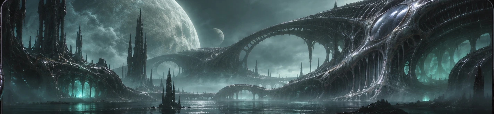

◉
Viscera
INTERACTION STUDIES
◌ Ambient motion on
VIDEO.JS / SKIN COLLECTION
Living
specimens.
Four organisms. One video player.
Choose a specimen and touch its controls.

AT REST
⛶
Leech
▶
◖))
FIELD NOTES